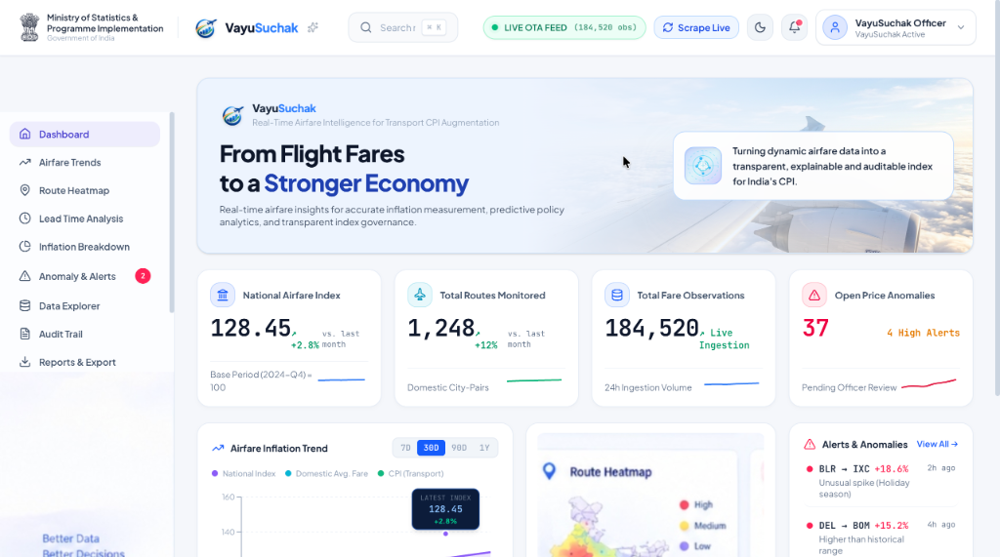
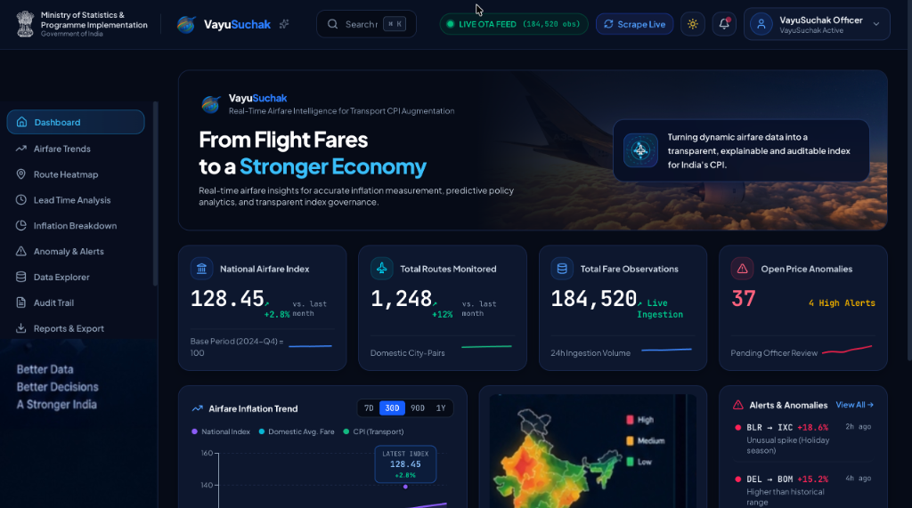
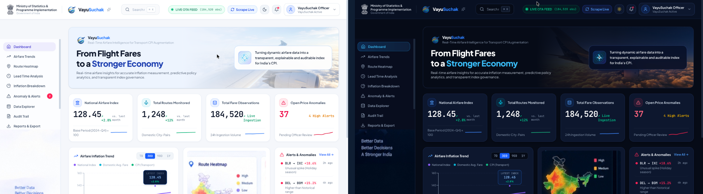
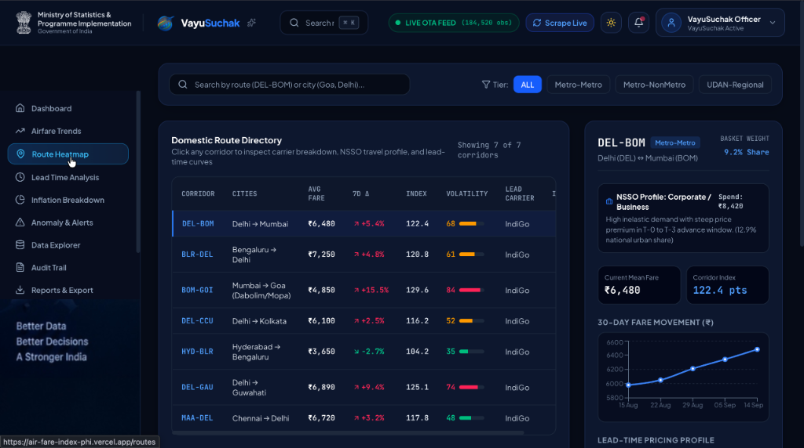
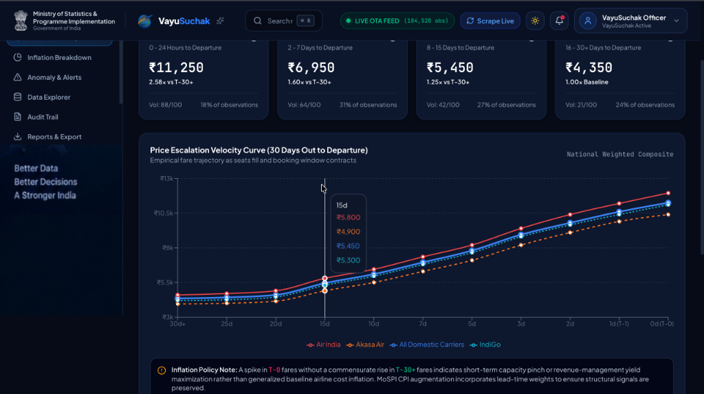
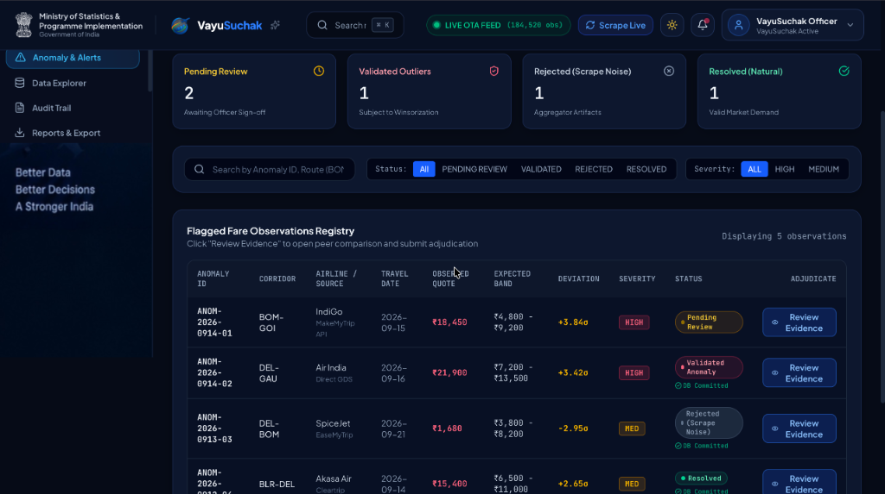

VayuSuchak (वायुसूचक)
Real-Time Airfare Price Index for India

An India-focused airfare intelligence platform that automatically collects dynamic fare observations across carriers and booking windows, standardizes them, detects statistical anomalies, and converts them into an explainable airfare price index designed for CPI augmentation.


Transforming High-Frequency Airline Observations into Auditable Price Metrics
SIX MEMBERS. ONE ENGINEERING CHALLENGE.
Building VayuSuchak for smarter airfare intelligence. A multidisciplinary engineering squad from Chill Coders dedicated to solving high-frequency price measurement for India's aviation sector.
EXPLORE THE LIVE VAYUSUCHAK INTERFACE
An unedited editorial tour through the real VayuSuchak application currently deployed and running. Click any module to inspect actual UI data, charts, and operational controls.

High-Frequency Aggregate Index
The primary command center tracking India's national airfare movement with superlative Fisher Ideal aggregation, multi-tier lead time breakdowns, and real-time corridor contribution metrics. Available in both high-visibility Light and Dark modes.
-
⚡
Live Index Tracking: Sub-daily index recalculation with baseline comparison against MoSPI target dates.
-
📊
Lead-Time Dispersion: Visual spreads between instant (T-0) departure fares and advance (T-30+) bookings.
-
🛡️
Validation Status: Continuous SHA-256 integrity validation on incoming scraper streams.

Domestic Route Directory & Corridor Intelligence
Granular corridor-level price tracking covering major metro pairs (DEL-BOM, BLR-DEL, BOM-GOI, DEL-CCU) with 30-day fare movements, NSSO travel profiles, lead carrier shares, and volatility spreads.
-
✈️
Corridor Weighting: Weighted by DGCA quarterly passenger traffic volumes (e.g. DEL-BOM 9.2% share).
-
🔍
Carrier Comparison: Real-time fare differentials across IndiGo, Air India, SpiceJet, and Akasa.
-
🗺️
Corridor Volatility: Color-coded volatility bars tracking 7-day delta and route index trends.

Price Escalation Velocity Curve (30 Days Out)
Aviation ticket pricing is deeply non-linear. VayuSuchak separates observations into fixed lead-time windows (0-24 hrs, 2-7 days, 8-15 days, 16-30+ days) across carriers (Air India, Akasa Air, IndiGo) to avoid mixing last-minute emergency fares with advance bookings.
-
📅
Standardized Horizons: 0-24 Hours (₹11,250), 2-7 Days (₹6,950), 8-15 Days (₹5,450), 16-30+ Days (₹4,350 baseline).
-
📈
Yield Curve Modeling: Empirical calculation of price acceleration curves approaching departure.
-
⚖️
Inflation Policy Note: Separates short-term capacity pinches from structural baseline inflation signals.

Flagged Fare Observations Registry & Adjudication
Sudden extreme spikes, promotional zero-base fares, or scraper anomalies are quarantined without silent deletion. Flagged quotes undergo statistical fences (Modified Z-Score, IQR, Scrape Noise) with transparent review.
-
🎯
Tri-Method Scoring: Flagged deviations (+3.84σ, +3.42σ, -2.95σ) categorized by severity (High, Medium).
-
📋
Review Evidence: Officers inspect peer comparisons before DB commitment or Winsorization.
-
👤
Triage Breakdown: Pending Review (2), Validated Outliers (1), Rejected Scrape Noise (1), Resolved Natural (1).
VayuSuchak Command Dashboard
Comprehensive operational dashboard providing high-frequency airfare intelligence, national index values (128.45 pts), domestic city-pair monitoring (1,248 pairs), live ingestion stats (184,520 observations), and open price anomaly tracking.
-
🔄
Live OTA Feed: Real-time ingestion counter tracking 184,520+ quotes across scheduled corridors.
-
🌓
Dual Theme Architecture: Optimized for both high-contrast Light mode and sleek Dark mode operations.
-
📑
MoSPI Press Export: Pre-formatted exports matching official MoSPI CPI Annexures I-IV.
DYNAMIC AIRFARES DEFIE TRADITIONAL INFLATION MEASUREMENT
Airfare prices are highly volatile and change dynamically based on route demand, booking lead time, airline yield algorithms, and unbundled taxes. Traditional periodic collection cannot capture the true cost of flight travel.
Dynamic Fares
Airlines alter prices continuously using algorithmic revenue management based on seat availability, competitor moves, and real-time passenger demand.
High-Frequency Observation
Periodic monthly or fortnightly spot quotations miss intra-month surges, festival price spikes, and rapid corridor-specific fare resets.
Multiple Fare Components
Quoted prices blend base fares, user development fees (UDF), passenger service fees (PSF), fuel surcharges, and GST, requiring consistent decomposition.
Lead-Time Effect
A ticket purchased 30 days prior costs drastically less than one bought on departure day. Mixing booking horizons corrupts index comparability over time.
Data Quality & Noise
OTA promotional discounts, glitch fares, and scraper drops create noisy outliers that must be vetted with non-destructive statistical fences.
Limited Explainability
Statistical indices cannot be black boxes. A shift in the national transport index must be fully traceable to specific routes, carriers, and lead-time buckets.
TURNING RAW FARE QUOTES INTO EXPLAINABLE PRICE INTELLIGENCE
VayuSuchak delivers an automated, transparent, and auditable pipeline that turns volatile airfare observations into calibrated price indices engineered for high-frequency CPI transport augmentation.
FULL-STACK ARCHITECTURE SPECIFICATION
Faithful to the actual VayuSuchak codebase: built with lightweight Python 3.12, FastAPI, SQLite 3, and React 19. Deterministic, local-first, and free from bloated cloud dependencies.
FROM RAW FARES TO PRICE INTELLIGENCE
VayuSuchak implements internationally accepted price index formulations recommended by the ILO and UN Consumer Price Index manuals. Every formula is transparent, deterministic, and fully reproducible.
Jevons
Geometric MeanElementary aggregation formula satisfying time-reversal and circularity tests. Immune to unequal price scale bias.
Dutot
Ratio of AveragesComputes the ratio of unweighted arithmetic mean prices between the current and base periods for homogeneous fare classes.
Laspeyres
Base-WeightedBase-period passenger volume expenditure index. Measures the change in cost of purchasing the base flight basket.
Fisher Ideal
Superlative IndexGeometric mean of Laspeyres and Paasche indices. Eliminates substitution bias and satisfies both factor and time reversal tests.
FROM ROUTE PRICES TO NATIONAL MOVEMENT
Raw route prices cannot simply be averaged linearly. A 10% price increase on a major trunk route like Delhi–Mumbai impacts far more citizens than an identical percentage increase on a low-traffic regional corridor.
- 1. DGCA City-Pair Traffic: Calibrated using Directorate General of Civil Aviation quarterly scheduled domestic passenger volumes.
- 2. NSSO Table 7 Shares: Aligned with National Sample Survey Office household consumer expenditure shares for transport.
- 3. Non-Destructive Weight Updates: Dynamic re-weighting cycles with full audit trail in the database.
PRICE CHANGES WITH TIME: BOOKING HORIZON DYNAMICS
Airfare tickets follow steep yield curves. To ensure statistical integrity, VayuSuchak separates price observations across distinct booking lead-time windows rather than blending unlike quotes.
TRIAGE INTEGRITY & CRYPTOGRAPHIC TRACEABILITY
High-frequency web data requires robust statistical validation. VayuSuchak isolates anomalies non-destructively and hashes every calculation into an append-only audit trail.
When a Price Looks Unusual
Suspect fares are never silently discarded. They undergo automated statistical scoring and remain quarantined for officer review before index inclusion.
Every Number Has a Trace
Designed so that every index value presented to statistical reviewers can be mathematically proven back to its constituent source quotes.
ENGINEERED SPECIFICALLY FOR STATISTICAL INTEGRITY
VayuSuchak is neither a consumer flight search engine nor a toy project. It is purpose-built to address the exact technical hurdles of official economic measurement.
India-Specific Airfare Index
Calibrated directly for the Indian domestic aviation ecosystem, accounting for UDAN routes, metro trunks, and local tax schedules.
Multi-Method Statistical Engine
Executes Jevons, Dutot, Laspeyres, Paasche, and superlative Fisher Ideal formulas concurrently for cross-methodological validation.
Passenger-Volume Weighting
Routes are dynamically weighted by actual DGCA quarterly passenger numbers and NSSO consumer expenditure surveys.
Lead-Time Intelligence
Separates observations into T-0, T-3, T-7, T-14, and T-30+ booking horizons to prevent yield-curve sampling distortion.
Route-to-National Contribution
Explains exactly which routes, airlines, and booking windows drove any given percentage point shift in the national index.
Anomaly & Quality Layer
Tri-method statistical fences (Modified Z-Score, IQR, MAD) identify anomalous quotes without destroying raw data history.
High-Frequency Monitoring
Automated Playwright and HTTPX background jobs replace labor-intensive manual ticket collection with continuous monitoring.
Auditable Cryptographic Lineage
Every ingestion event, normalization pass, and index run generates a cryptographic SHA-256 hash in SQLite for complete audit defense.
EXAMINING AIRFARE VOLATILITY & STATISTICAL MEASUREMENT
Understanding the real-world connection between air travel costs, inflation metrics, and the imperative for auditable statistical precision.
Auditor Perspective on Inflation & Price Measurement
An authoritative discussion highlighting the practical challenges of auditing dynamic price systems, understanding volatile transport indices, and establishing verified data lineage in modern economics.
ANNOTATED APPLICATION MODULES
A closer examination of the core operational screens inside the VayuSuchak platform, showing how each component directly fulfills the SIH26056 requirements.
Aggregate price movement computed across all monitored corridors using superlative Fisher Ideal formula.
Instant visual alerts highlighting metro routes experiencing sharp upward yield surges.
Real-time tally of daily quotes successfully ingested, normalized, and stored into SQLite.
Active count of quotes currently flagged by Modified Z-Score or IQR fences awaiting verification.
Comprehensive tracking of high-density corridors (DEL–BOM, BLR–DEL, BOM–GOI, DEL–CCU).
Corridor index trends and historical fare curves (e.g. ₹5,800 to ₹6,480 on DEL–BOM).
Calibrated against NSSO Table 7 urban expenditure shares with corporate/leisure classifications.
Dynamic passenger volume weights reflecting true economic impact (e.g. 9.2% DEL–BOM share).
Departure day emergency pricing (₹11,250 avg, 2.58x vs T-30+ baseline, 18% of observations).
Tactical business booking horizon (₹6,950 avg, 1.60x vs baseline, 31% volume).
Planned travel window (₹5,450 avg, 1.25x vs baseline, 27% volume).
Advance booking baseline (₹4,350 baseline, 1.00x, 24% volume across carriers).
Quarantined outlier quotes awaiting human-in-the-loop review before index inclusion.
Automated deviation scoring (+3.84σ, +3.42σ, -2.95σ) with expected price bands.
One-click peer quote inspection across competing airlines for the same travel date.
Every adjudication (Validated, Rejected Scrape Noise, Natural) hashed into SQLite audit trail.
FROM AIRFARE DATA TO BETTER INSIGHT
How VayuSuchak delivers concrete value to statistical officers, economic policy analysts, and national price monitoring divisions.
High-Frequency Monitoring
Transitions airfare measurement from intermittent manual inquiries to continuous sub-daily observation, capturing real-time price volatility and holiday surges.
Explainable Analysis
Enables economists to decompose national transport price index changes down to exact corridors, booking lead times, carrier pricing, and tax component shifts.
CPI Augmentation
Provides a calibrated, auditable airfare intelligence stream designed to augment the transport group in the Consumer Price Index without compromising baseline rigor.
BUILT WITH PRECISION
Every technology listed below is actively utilized in the VayuSuchak codebase. No fictitious cloud architectures or exaggerated claims.